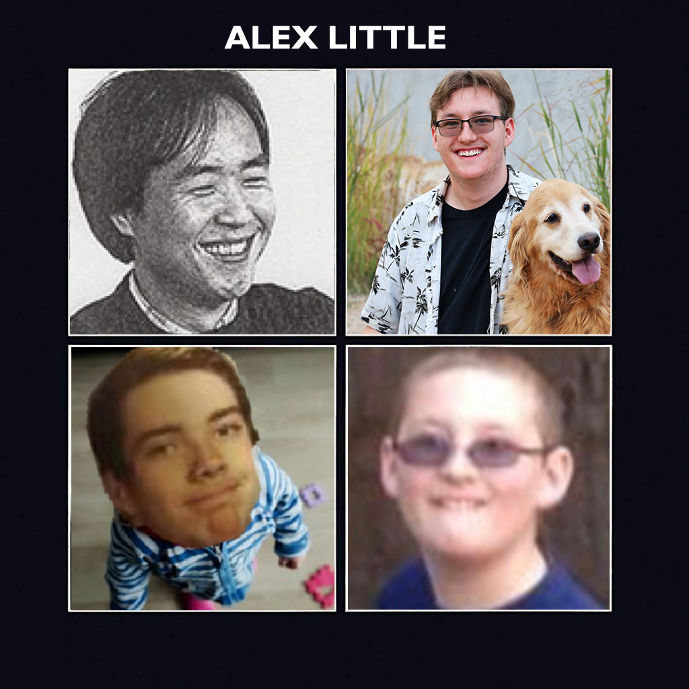

Hello, I am Alex Little. I am a second year student at the Univeristy
of Colorado Boulder. My major is Creative Technology and Design with a
focus on Film, which also happens to be my minor. I decided at a young
age that I liked movies so much, that I wanted to join in the fun and
make them.
Besides movies there are plenty of other things I enjoy including
video games(particularily stragety games), Doctor Who, music,
Photoshop, and writing.
Earlier I mentioned that I quite enjoy photoshop. Recently to help me
keep getting better at photoshop I have started to plaster myself over
famous album artwork. This is what I have made so far.
Weezer's Blue Album, but my head on every band member
Tom Petty's Full Moon Fever, with me on it
The Beatle's Rubber Soul, but its all me

The Beatle's Let it Be, but with two pictures of me, one of my friend
Ethan, and one of Fire Emlbems creator Shouzou Kaga
My Film Work
Since I want to be a filmmaker I have made some short films! Some for
school, some for fun.
A radio show that I wrote and directed for a final in the Fall
Semester of my senior year of high school
Another radio show I wrote and directed, not part of school this time.
I had 5 episodes writen, but do to actor commitments, episodes 2-5
were never made.
A video sequel to a video I had made around when I was 10 years old. I
classify this video as a "shitpost".
Another "shitpost", this time in the form of a Minecraft video. I
honestly still enjoy this one a lot.
My first project in CINE 2010 where we had to make a super cut out of
found footage. This uses logos of film comapnies to show an evolution
of how logos have changed overtime.
First proper project in CINE 2000. We had to make a homage to randomly
generated film. Mine was a French documentary about some musician. It
was mostly indoors, that and the name was where my "homage" came in. I
for fun decided to make the "worst" film ever from a technical
standpoint.
For my second CINE 2010 project we were given a bunch of takes of a
seen and to edit a continuity cut. I focused on the emotional
continuity of the guy in the desk.
For my next CINE 2000 project we had to make a structural film. The
main idea of mine came from "Nostalgia" by Holis Frampton. In this
film I restring one of my guitars.
For the midterm project in CINE 2010 we had to make a genre shifted
trailer. I choose to do Scott Pilgrim in the style of a Bond Film. I
actually quite proud of this edit still.
For the penultimate project in CINE 2000 we had to make a self
portrait. I honestly don't remember the making of this one.
My final for CINE 2000 where we had to make an experiemental
narrative. I did this through landscapes, long shots, and long takes.
This is my favorite thing I've ever made. I'm very proud of it.
My CINE 2010 final was a personal documentary. Turned out pretty good
in the end.